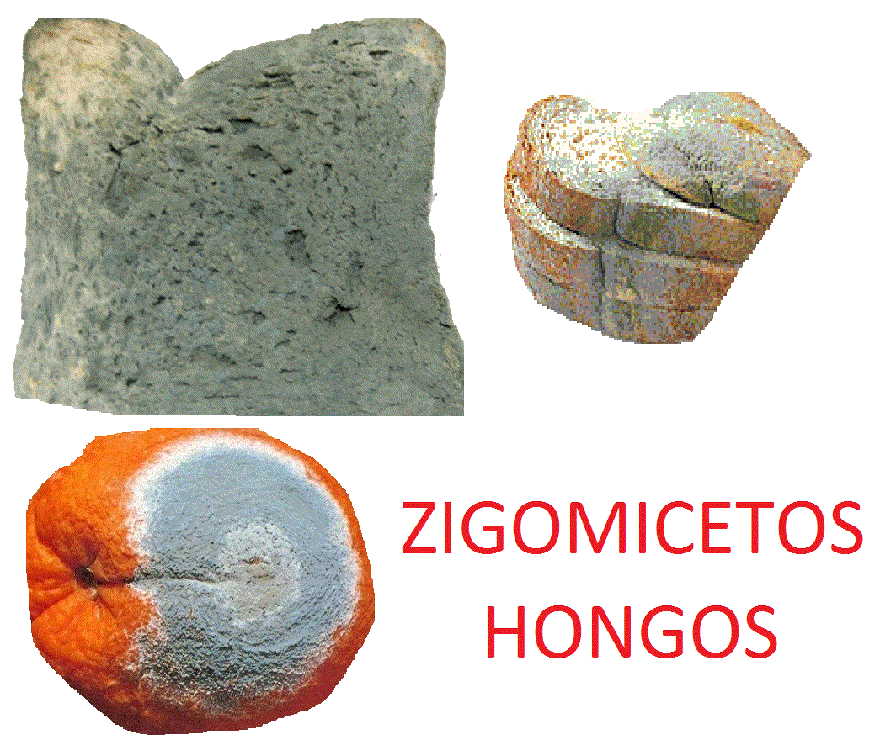

Reino fungi
El reino fungi es uno de los grupos en que la biología clasifica a las formas de vida conocidas. Está compuesto por más de 144.000 especies diferentes de hongos, entre los que figuran las levaduras, los mohos y las setas, y que comparten características fundamentales como la inmovilidad, la alimentación heterótrofa y ciertas estructuras celulares.Los hongos existen en todo el mundo y en distintos hábitats, y aparecen en distintas formas y presentaciones.
De la totalidad de los hongos que habitan nuestro planeta, tan solo un 5 % ha sido estudiado y clasificado, y se estima que existen alrededor de 1,5 millones de especies aún desconocidas. Esto en parte se debe a que antiguamente los hongos eran clasificados como un tipo de planta, hasta que en el siglo XIX se los empezó a distinguir como un reino biológico aparte.
La ciencia que se especializa en los miembros del reino fungi se llama micología.
características del reino fungi
Los miembros del reino fungi comparten las siguientes características fundamentales:
- Carecen de movilidad propia. Los hongos crecen en el suelo, en las superficies, o sobre troncos o materia orgánica en descomposición, dependiendo de sus preferencias. Al igual que las plantas, se mantienen toda su vida en el mismo lugar, incapaces de moverse a voluntad.
- Poseen pared celular. Las células de los hongos son eucariotas, es decir, tienen un núcleo celular Además, tienen una pared celular rígida, semejante a la de las células vegetales, pero en lugar de estar compuesta de celulosa, está compuesta de quitina, la misma sustancia que otorga a los insectos la dureza de sus exoesqueletos. Además, son células alargadas, que pueden contener varios núcleos, y poseen vacuolas pero no cloroplastos, pues no hacen fotosíntesis.
- Crecen como hifas. El crecimiento de los hongos se produce a manera de hifas, estructuras cilíndricas y uniformes que pueden ir de los pocos micrómetros a los varios centímetros de longitud, y pueden superponerse en un proceso de ramificación o bifurcación. Conforme las hifas crecen, forman una masa enmarañada o red con forma de tejido llamada micelio.
- Absorben alimento del ambiente. Los hongos no ingieren alimento y luego lo digieren en el cuerpo como los animales. En vez de ello, infiltran una fuente alimenticia y segregan enzimas digestivas en ella. La digestión tiene lugar fuera del cuerpo. Cuando moléculas complejas se descomponen en compuestos más pequeños, los hongos absorben el alimento predigerido en su cuerpo.
- Se reproducen mediante esporas. Las esporas son células reproductivas microscópicas que pueden desarrollarse hasta ser nuevos organismos. Generalmente se producen en hifas aéreas especializadas o en estructuras fructíferas. Las estructuras donde se producen esporas se llaman esporangios. Las hifas aéreas de algunos hongos producen esporas en grandes estructuras reproductivas complejas conocidas como cuerpos “fructíferos”. La parte familiar de una seta es un gran cuerpo fructífero.
Clasificación del reino fungi
La clasificación de los hongos se ha reelaborado a lo largo de la historia de la biología, a medida que se desarrollan mejores técnicas de reconocimiento y se distinguen a los hongos de otras formas de vida que se les asemejan. La clasificación actual del reino es la siguiente.
- Hongos basidiomicetos (Basidiomycota). Desarrollan setas (basidiocarpos), de las cuales nacen las esporas reproductivas del hongo.
- Hongos ascomicetos (Ascomycota). En lugar de setas tienen ascos, células sexuales productoras de esporas.
- Hongos glomeromicetos (Glomeromycota). Son micorrizas, o sea, uniones simbióticas entre un hongo y las raíces de una planta. El hongo otorga nutrientes y agua, y las raíces aportan carbohidratos y vitaminas que el hongo no puede sintetizar.
- Hongos zigomicetos (Zygomycota). Son mohos que forman zigosporas, es decir, esporas capaces de soportar condiciones adversas durante mucho tiempo hasta que finalmente puedan germinar.

- Hongos quitridiomicetos (Chytridiomycota). Son hongos microscópicos y primitivos, generalmente acuáticos, que se reproducen por esporas flageladas (zoosporas).